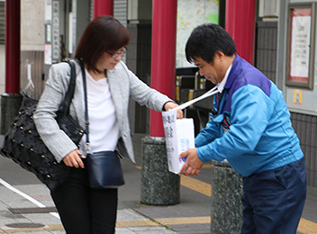
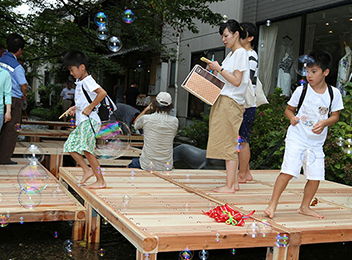
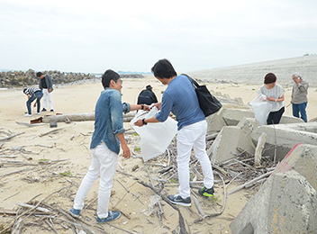
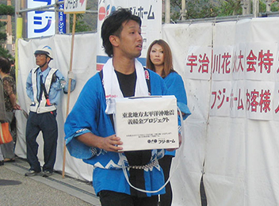
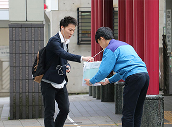
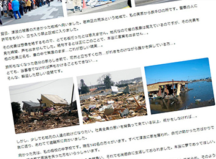
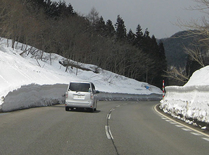
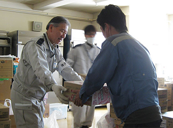
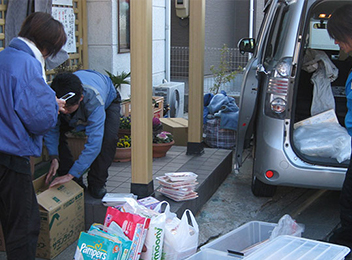
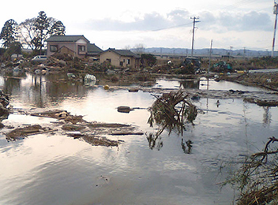

JR山科駅、地下鉄椥辻駅前にて募金活動
フジ・ホーム義捐金プロジェクトの一環として募金活動を実施しました。

京都市の高瀬川で行われるイベントに川床を寄付
高瀬川ききみずガーデンの川床の制作を行い寄付しました。

福島県において清掃活動を実施
福島県におきまして浜辺の清掃活動を実施しました。
日本赤十字社へ義捐金を納める
合計19,077円を義捐金として納めました。
日本赤十字社へ義捐金を納める
合計86,351円を義捐金として納めました。
日本赤十字社へ義捐金を納める
合計17,477円を義捐金として納めました。

第51回宇治川花火大会にて南営業所に募金箱を設置
フジ・ホーム義捐金プロジェクトの一環として募金活動を実施しました。募金集計金額は17,477円となりました。
日本赤十字社へ義捐金を納める
合計149,882円を義捐金として納めました。

JR山科駅前にて募金活動
フジ・ホーム義捐金プロジェクトの一環として募金活動を実施しました。募金集計金額は21,882円となりました。
日本赤十字社へ義捐金を納める
合計1,736,322円を義捐金として納めました。

被災地宮城へ向った救援団の報告
被災地宮城へ向った救援団の報告1～4を公開しました。

宮城県の救援団帰社する
宮城県で救援活動、義捐金活動を行っていた救援団が活動を終了し帰社しました。

JR山科駅前、宮城県仙台市にて募金活動
フジ・ホーム義捐金プロジェクトの一環として募金活動を実施。募金集計金額は29,322円となりました。

救援及び物資輸送のため宮城県へ向け出発
支援物資を届けにワゴン車2台4名で宮城県へ向け出発しました。
フジ･ホーム義捐金プロジェクト発足
『会社として何が出来るのか』と、社員全員が一丸となり義捐金プロジェクトが発足しました。

救援に宮城県名取市へ向け出発
東日本大震災発生の翌日。救援のため宮城県名取市へ向け急行しました。